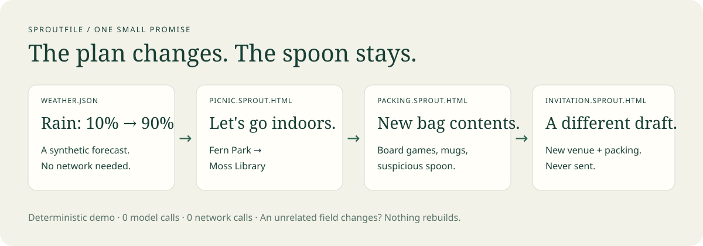

What if an AI output could keep a tiny promise?
We gave a picnic plan sources, an update recipe, and a future. Then we made it rain.
These are real snapshots produced by the local runtime using fictional data. This page is read-only: opening a file does not start an agent or refresh it.

Before the rain
After the rain
Try changing its world yourself
git clone https://github.com/varadganjoo/sproutfile.git cd sproutfile python -m sproutfile demo python -m sproutfile --root sprout-demo watch invitation.sprout.html
Requires Python 3.11+. Edit sprout-demo/weather.json and set rain_chance to 0.1. Reload the generated files to see them return outdoors. Stop the watcher with Ctrl+C.
The demo uses rules and templates. For generated prose, the file emits a job that any capable agent can continue; proposals for stale input hashes are rejected. The runtime also has an opt-in Ollama adapter, currently unverified with live inference.